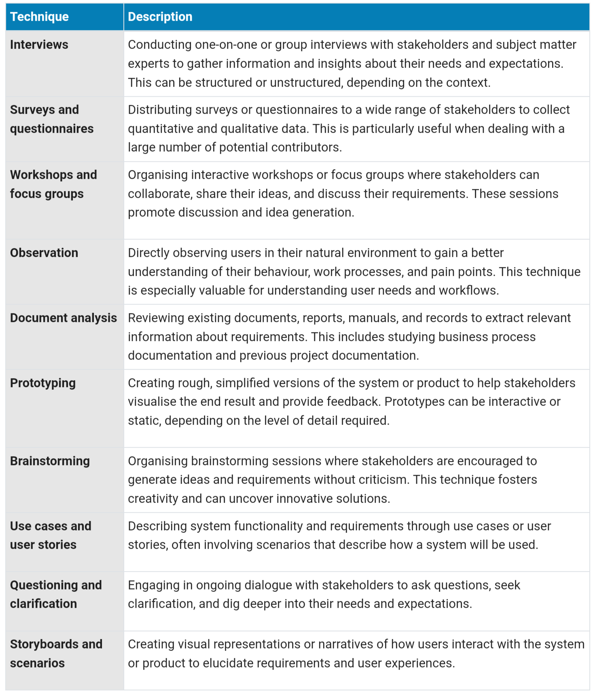
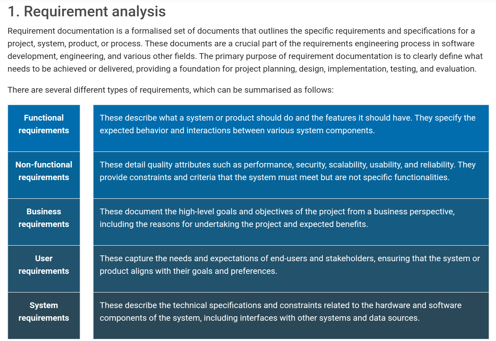
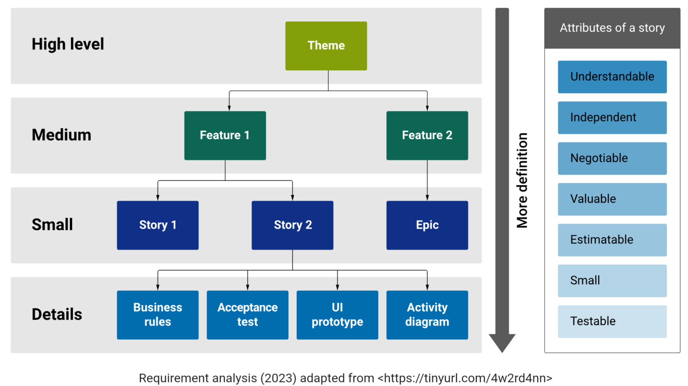
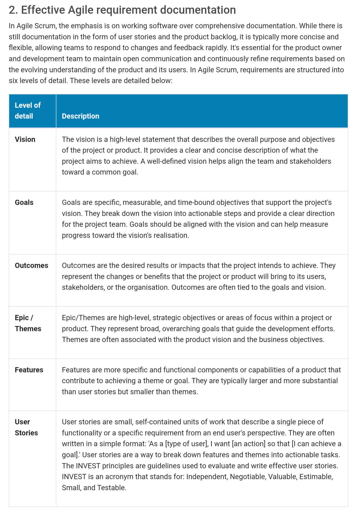
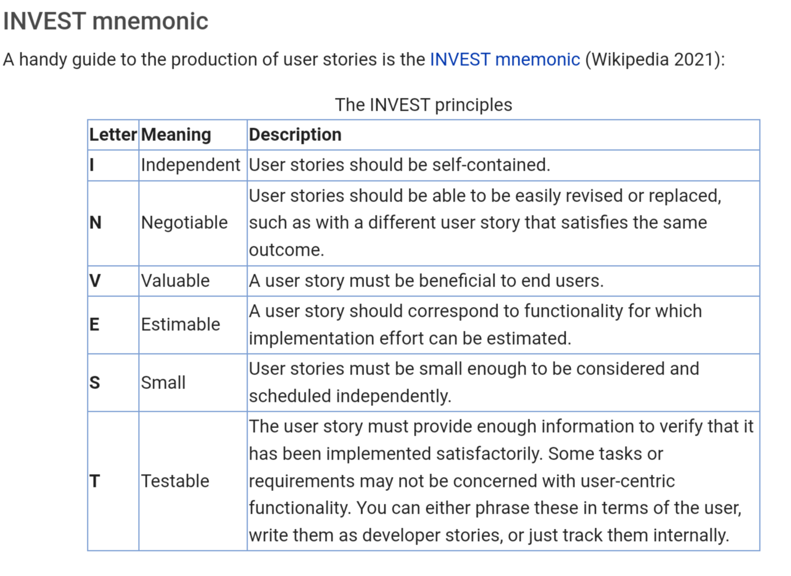

Module 2: Requirement Engineering
Stakeholder Identification and Management
Helps build support, mitigate risk, and ensure projects align with
expectations and interests of stakeholders.
Four step process:
Identification
- Identify all relevant stakeholders by systematically identifying
individuals, groups, and organisations who may be impacted by or
have an impact on the project or initiative
- May include customers, employees, suppliers, regulatory bodies
shareholders, competitors, and the general public
Categorisation
- Once identified, stakeholders are categorised into groups based on
their level of influence, interest, or involvement in the
project
- Common categorisations include primary stakeholders (those directly
affected by the project), secondary stakeholders (those indirectly
affected), and external stakeholders (those outside the
organisation)
Understanding
- Gain a deep understanding of each stakeholder's interests, need
expectations, and concerns
- Involves communication and engagement with stakeholders to gather
information and insights about their perspectives
Engagement and Communication
- Effective communication is vital for managing stakeholders
- Project managers and teams should establish clear lines of
communication with stakeholders, tailoring messages and engagement
strategies to suit each group's characteristics and preferences
Requirement Elicitation Techniques
Methods and strategies used to gather information, needs and
requirements from stakeholders and users during the early stages of
the project.
Essential to ensure the final product or system aligns with
stakeholders' expectations.
Typically conducted by busines analyst of product owner.

How to Write an Effective Survey
1. Preparing your questions
- Define your objectives - what information am I trying to gather?
How will it help me make informed decisions or draw meaningful
conclusions?
Crafting your questions effectively
- Keep questions clear and concise
- Avoid ambiguity
- One question at a time
- Use neutral language
- Avoid assumptions
- Use rating scales effectively
- Provide response options
- Avoid negative questions
3. Additional guidelines for question composition
- Question order - start with easier, non-sensitive questions to
engage
- Include an "other" or "N/A" option
- Balance response categories to ensure they are not skewed
- Consider skip logic - skip irrelevant questions
- Open-ended questions
- Pilot test your survey
Requirement Analysis and Documentation



Writing User Stories and Acceptance Criteria
User stories
- Succinct descriptions of actions a user would want to do with the
system: "As a [type of user] (who), I want [some goal] (what) so
that [some benefit] (why)".
- Should fit on a sticky note, written simply from the client's
perspective.
- Commonly annotated with an estimate of time to implement. Could
be hours or days, or represented by something abstract such as
T-shirt sizes.

Acceptance criteria
- Defines user story's boundaries to enable confirmation of whether
software is working as expected - defines a successful test
result.